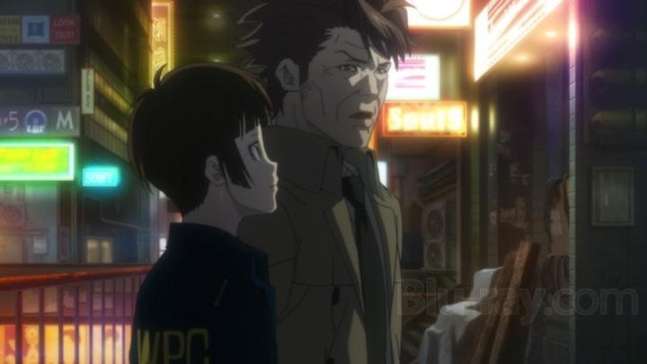

Disclaimer: This is a review of the 2012 anime "Psycho-Pass" and its first season (episodes 1 - 22). Production I.G. has been chasing glory ever since they hit gold with "Ghost in the Shell" in 1995. To this day, that's the big franchise they cite in "from the studio that brought you" introductions, more than two decades later. They've produced a lot since then, and all of it has been consistently good, but not quite exceptional, in quality, which goes to show how hard it can be to find success in such a competitive market. Enter "Psycho-Pass," the new edgy sci-fi clone of "Ghost in the Shell." With so many comparitive similarities, it's not surprising they gave their 2012 debut of sci-fi anime "Psycho-Pass" the prestige treatment, hoping it would rise to fame like "Ghost" did. And it did, becoming perhaps the studio's most popular franchise of the past decade. And I didn't expect how popular it would become, expanding to three television seasons, and six theatrical movies. Most of which would get lost in licensing limbo and be unavailable to North America for some time, but this might be corrected soon upon the release of the 2023 film "Providence," which the studio claims will be the final entry in the franchise. And a great excuse for me to finally get around to watching the series (a decade late is better than never, right?). "Psycho-Pass" is set in a future dystopia (or utopia, depending on how you look at it). There is now technology that can read your biometrics and tell your personality traits, aptitudes, and likelihood of committing a crime. This is adopted into the "Sibyl System," a nationwide civil network in Japan that tracks and maintains order for its citizens. Any citizens about to commit a crime are caught before they try. The system can even recognize which job roles you would be best suited for, and places you in it. Danger, stress, and even freedom of choice has become a thing of the past, and prosperity is at its highest. This doesn't mean crimes can't occur when a person's stress levels start to spike. A special department of cops and detectives is assigned to handle active cases, made up of both inspectors and "enforcers" (individuals with crime coefficients too high to adapt to society, but who made a choice to be put to use by the police to avoid endless confinement - the best people to catch criminals are criminals themselves). They're each armed with a "Dominator," a gun-like device that can scan a person's crime coefficient, and switch its mode (from stun gun, to lethal shot, or being disabled entirely) based on the danger it recognizes. The main character in the series is Akane, a rookie Inspector, learning the ropes the hard way alongside senior inspectors and the enforcers she oversees. That includes enforcer Shinya Kogami, the serious-looking poster-boy in the show's promotional mateiral. He's very good at his job, and doesn't seem at all like a criminal, even though he's sometimes blunt with his methods. Akane slowly learns more about his history and how his crime coefficient rose to trap him into his current role. In many ways, "Psycho-Pass" is a near cookie-cutter copy of the tone in "Ghost in the Shell," particular the television series "Stand Alone Complex." Each episode tackles a different crime, like a police-serial (think "CSI" or "Criminal Minds") with the backdrop of what-if technology. You can imagine all the philosophical ideas that come up: is it OK to judge an individual before they've actually committed a crime, or made any steps to proceed to do so? what if it's for the sake of the majority, to guarantee their safety and peace-of-mind? is it OK to limit a person's career choices based on a psychological test, with no chance to redo it? and what if the technology fails, inaccurately reading a crime coefficient, locking your gun seconds before a murder occurs in front of you? The show is never as smart as it thinks it is, especially compared to "Ghost," and having so much of these quandries told in exposition doesn't help much. But it's still smarter than most anime, and should satisfy most sci-fi fans with the topics raised. That formula only lasts for the first half of the season (the first 11 episodes). By the end, we're introduced to the big bad guy of the season, and the the following 11 episodes focus entirely on him, and the department's efforts to catch him before it's too late. Again, this isn't too disimilar to "Stand Alone Complex." I have mixed feelings on the change, as I enjoyed the episodic nature of the stand-alone crimes, but I admit the focused storyline in the second half was very engaging and hard to put down. It's worth noting how shockingly violent the show can be. Naturally, the crimes involve murder and violence, and the detectives have to scan the corpses to understand what occurred. But the violence is brutal nonetheless, much moreso than I expected. It surpasses violence in most other anime, and is not for the squimish. I think some viewers might allow a 14-year-old to watch a MA-rated show, but this should strictly be left to an adult audience... which is strange, since the hero characters and their dialogue isn't far removed from shonen-jump anime at times. The show could have edited out a minute or two from each episode to make it more friendly for a teenage demographic, but it's as if the creators enjoyed the depravity they could show on screen. The lead writer for the show is Gen Urobuchi, one of the most popular anime writers at the time, best known for his plot twists and use of violence (hence the nickname "the Butcher").  Generally, I was on-board with the show and agreed that "Psycho-Pass" was worth the hype. Up until towards the end, when an inevitable twist appears, in this case to show what the Sybil System really is and how it works. The twist was underwhelming to me - I agree that it was surprising, but I didn't see why it was such a big deal when presented to the other characters. In my head, I predicted a very different explanation for what the Sybil System was... more predictable, perhaps, but much more powerful in its statement. Instead, the actual twist borders on nonsensical. Key to saving that ending, and keeping the show engaging from start to finish, is the lead in Akane. A bit naive at first, she's the only one on the team who refuses to shoot when her Dominator is set to "lethal" mode, instead hoping to act as negotiator to talk down a criminal, perhaps saving their life. She's still the sort of character who plays by the rules, unlike some of the enforcers she watches over, but that doesn't give her enough credit. She knows to PLAY by the rules, and use them to her advantage to uphold her sense of justice (and not the systems's), while also respecting them when she disagrees with it. Her reasoning and bright personality are easy to root for, and hard to watch when she's put through the ringer. As one might expect, "Psycho-Pass" look good, and at the time of release, the production quality was probably considered "strong" or at least "solid." But it's a little underwhelimg a decade later. Designs are generally note-worthy for being attractive but distinct - cooler characters and villains look similar to work in "Cowboy Bebop" or "Ninja Scroll," while characters like Akane are given a cuter "moe" design that stands in contrast to the horror they witness. The futuristic sci-fi backgrounds are a little sterile in the police station and cityscapes, and animation, more disappointingly, is surprisingly static for large chunks of the show. Everything picks up more in the raids and perspectives of the criminals, heavily using dark shadows and red/orange colours to feel more vibrant and rusted, and more lively animation to depict their madness or desparation. This is especially true in the second half of the series, where the setpieces look increasingly cinematic, despite some of the animation still having long shots where characters don't move. Strong direction helps make the most of this in the editing. The sound is pretty great, not just for the opening and ending themes, but the sound design and mixing itself - it's a treat to hear the cyber-infused effects. The English dub from Funimation was good, although not ground-breaking in any way. It's worth pointing out the quality of the North American Bluray release (I got the original collector's edition Bluray from Funimation). I was shocked and disappointed at the poor video quality. Color banding and macro-blocking, especially in darker scenes, is persistent across virtually all of the episodes. A few select scenes suddenly shift to what appears to be 240p resolution. Most likely, Funimation directly used the streaming video from Crunchyroll instead of getting the Japanese masters, an issue that's been known to happen in the early 2010's. Other sources online cite the same problems for the English-language release of "Psycho-Pass" for multiple reasons, although it's not clear how much better (if at all) the Japanese release might be. On top of that, the quality of show itself varies, with some scenes looking crisp and sharp, and others with underwhelming softness. While that makes the Bluray video look like a DVD in most scenes, I suspect that's due to inconsistent render resolutions at a time when sub-720p masters for television production was still the norm for anime, opposed to an issue from the master file given to Funimation. In short, the Bluray looks distractingly bad, a shame for what should be a prestige title with great use of colour. There's no shortage of good police sci-fi dramas in anime, but "Psycho-Pass" is a pretty great entry with strong direction, good character and background art, and great music. It doesn't dethrone "Ghost in the Shell," but is a strong recent franchise for Production I.G. to be proud of. Depending on your limits for on-screen violence, it's easy to recommend.
- "Ani" More reviews can be found at : https://2danicritic.github.io/ Previous review: review_Psycho-Pass_-_Providence Next review: review_Psycho-Pass_-_Season_2